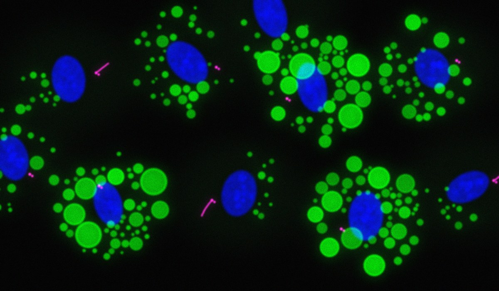

Organelle dynamics in cell signaling and disease
At the ODyS Lab, we investigate how centrosomes and primary cilia change as cells differentiate, respond to metabolic conditions, and acquire disease-associated properties. We ask how changes in organelle structure and organization influence cellular signaling and function. Our research brings together cell biology, microscopy, and molecular approaches, with a focus on adipocyte differentiation, cancer, and cellular responses to elevated glucose.
BACKGROUND
Centrosomes and primary cilia help organize how cells divide, sense their environment, and respond to signals. The centrosome organizes microtubules and contributes to cell division, while the primary cilium acts as a specialized compartment for cellular signaling. These structures are dynamic, changing their organization and activity as cells transition between different states.
We seek to understand how this structural flexibility relates to cell function. By studying differentiation, cancer, and metabolic stress, we explore how organelle changes contribute to cellular adaptation and how their disruption may contribute to disease.

RESEARCH AREAS
Centrosome remodeling during adipocyte differentiation
How does the centrosome change as a precursor cell becomes a mature adipocyte? We investigate changes in centrosome composition, structure, and microtubule organization during this transition. Our goal is to understand how these changes relate to the development of specialized adipocyte functions, including lipid storage and metabolic signaling.
Centrosome/cilium complex and cellular responses to metabolic stress
How do elevated glucose levels affect primary cilia and the cells that depend on them? With a focus on ciliated cells, we explore how changes in the metabolic environment influence cilium organization, signaling, and cellular function. Our goal is to understand the relationship between ciliary changes and early cellular responses to metabolic stress.
Centrosome integrity and cancer cell behavior
How do changes in centrosome structure influence cancer cell growth and survival? We investigate the relationship between centriole integrity, cell division, and cellular stress responses. Our goal is to understand how cancer cells respond to disruptions in centrosome organization and how these responses influence their fate.